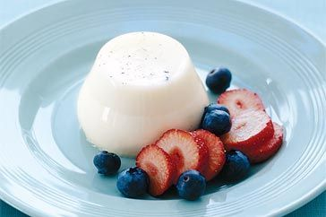

Panna cotta

Description
Panna cotta is an Italian dessert that translates to "cooked cream." It is a simple yet sophisticated dessert made by simmering together cream, milk, and sugar, mixing this with gelatin, and letting it set in a mold. The mixture is infused with vanilla, which gives it a fragrant aroma and delicate flavor. Panna cotta has a smooth, creamy texture that melts in the mouth and can be paired with a variety of toppings, such as fresh berries, fruit sauces, or caramel. It's a versatile dessert that is both light and satisfying, often served chilled, making it a refreshing end to any meal.
Ingredients
- 2 cups heavy cream
- 1 cup whole milk
- 1/2 cup granulated sugar
- 1 vanilla bean
- 2 1/4 teaspoons unflavored gelatin (about 1 packet)
- 3 tablespoons cold water
- Fresh berries or fruit sauce (optional, for serving)
Steps
- Prepare the Vanilla Bean: Slice the vanilla bean lengthwise and scrape out the seeds.
- Heat the Cream and Milk: In a saucepan, combine the heavy cream, whole milk, sugar, vanilla bean seeds, and the vanilla bean pod. Heat the mixture over medium heat until the sugar is dissolved and the mixture is hot but not boiling. Remove from heat and let it steep for 15 minutes.
- Bloom the Gelatin: In a small bowl, sprinkle the gelatin over the cold water and let it sit for about 5 minutes to bloom.
- Combine Gelatin and Cream Mixture: Remove the vanilla bean pod from the cream mixture. Reheat the cream mixture until hot but not boiling. Stir in the bloomed gelatin until completely dissolved.
- Pour and Chill: Pour the mixture into individual serving glasses or ramekins. Let them cool to room temperature, then cover and refrigerate for at least 4 hours or until set.
- Serve: Serve the panna cotta with fresh berries or a fruit sauce, if desired.